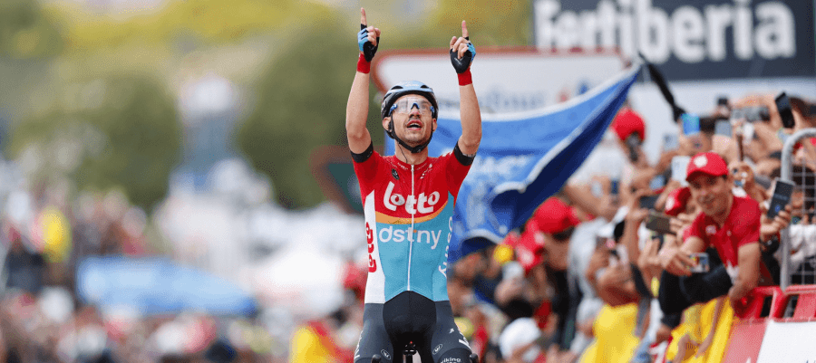

La Vuelta 2023 - Etapa 2: Victoria de Andreas Kron en Montjuïc
Publicado el 30 de octubre de 2023
Andreas Kron, un destacado ganador de etapas en la Volta a Catalunya y el Tour de Suiza, ha vuelto a subir a lo más alto del podio en tierras catalanas, esta vez en una gran vuelta y en un escenario icónico para el ciclismo: la montaña de Montjuïc. En cumplimiento del protocolo climatológico, los tiempos para la clasificación general se tomaron a 9 kilómetros de la línea de meta, lo que benefició al líder Andrea Piccolo (EF Education EasyPost), quien resistió en la escapada al pasar por la avenida Reina Maria Cristina.
La Fuga de los Valientes
La etapa estuvo marcada por una emocionante fuga formada por Andrea Piccolo, Matteo Sobrero (Team Jayco AlUla), Javier Romo (Astana Qazaqstan), Jetse Bol (Burgos-BH) y Joel Nicolau (Caja Rural-Seguros RGA). Esta escapada se materializó en el primer puerto del día, el Coll de Sant Bartomeu (categoría 3), que se afrontó desde el inicio de la etapa en Mataró. Los primeros cuatro ciclistas destacaron hasta que Bol, un veterano, logró unirse al grupo. La ventaja máxima de los cinco corredores fue de aproximadamente 3 minutos y 30 segundos antes del Coll d’Estenalles (categoría 2), donde el equipo DSM-firmenich, liderado por el actual líder, los mantuvo bajo control y nunca permitió que la ventaja superara los dos minutos. Posteriormente, equipos con aspiraciones en la etapa, como el Alpecin-Deceuninck, se sumaron a la persecución.
Lucha por el Liderato de la Montaña
Después de las puntuaciones en los dos primeros puertos del día, Matteo Sobrero (Team Jayco AlUla) y Javier Romo (Astana Qazaqstan) empataron en el liderato de la clasificación de la montaña de La Vuelta 2023 con 6 puntos. Sin embargo, este empate se resolvió a favor del italiano, ya que había coronado en cabeza en un puerto de mayor categoría, como el caso de Estenalles. Finalmente, Romo y Andrea Piccolo (EF Education-EasyPost) fueron los dos ciclistas que resistieron durante la aproximación de la carrera a Barcelona. Esta parte fue muy técnica y estuvo marcada por la tensión en el pelotón, lo que les permitió mantener una ventaja de un minuto al ingresar en los últimos 20 kilómetros de etapa sin ser atrapados hasta la base de la subida final al Alto del Castillo de Montjuïc (categoría 3).
Victoria de Andreas Kron
En la subida final, Andreas Kron (Lotto Dstny) demostró ser un experto cazador de etapas y lanzó un ataque en las rampas más empinadas de la subida. Se lanzó en solitario en el descenso hacia la victoria de etapa, que logró con una ventaja de siete segundos sobre un reducido grupo liderado por Kaden Groves (Alpecin-Decenuninck). Lorenzo Milesi (Team DSM-firmenich), el primer líder de La Vuelta 2023, cruzó la línea con un retraso de 13 minutos y 51 segundos debido a caídas en la aproximación de Barcelona.
Próxima Etapa en Alta Montaña
Este lunes, La Vuelta 2023 continuará con su tercera etapa, que se llevará a cabo en alta montaña a lo largo de 158,5 kilómetros desde S